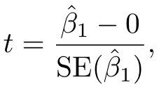
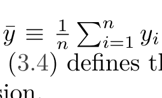

ISLP PDF to EPUB
Turning a 613-page LaTeX-set statistics textbook into a reflowable EPUB for a Kobo Libra 2
Built and packaged; verification pass in progress.How the book is taken apart
Six stages. Nothing here guesses at the layout: every rule below was measured from the file itself before it was written down.
The mathematics, triaged
The starting assumption was that no mathematics could be recovered as LaTeX and that all of it would have to be read back out of images. That turned out to be true for only part of it. Sub- and superscripts are recorded in the PDF as a font-size drop plus a baseline shift, so most inline mathematics can be rebuilt exactly, for free, and stays as reflowing text. A vision model is spent only where the structure is genuinely absent.
Where the crops went wrong
Cutting an expression out of the page was the hardest single problem in this conversion, and it took four attempts. A fraction is not on one line: its numerator, its rule and its denominator sit on three different baselines, and the text layer files them as three unrelated lines.





Every attempt, in order
4 worked, 2 partly worked, 4 failed outright. The failures are the interesting ones: each was caused by a rule that sounded reasonable and did not survive contact with the page.
-
01
Survey the tooling
workedTried Check what is installed: poppler, qpdf, ghostscript, python, node, codex.
Result No pandoc, no calibre, no Java. Decided to write the EPUB directly in Python for full control of the markup, and to write a structural validator because epubcheck needs Java.
-
02
Probe fonts and outline
workedTried Count every font and character in the file; read the PDF bookmarks.
Result 309 correct outline entries to build navigation from. Prose in Latin Modern, mathematics in Computer Modern: two disjoint families. Only 44 raster images in the whole book, so nearly every figure is vector art.
-
03
Extract mathematics as LaTeX from the text layer
partly workedTried Try to rebuild LaTeX directly from the PDF character stream.
Result Symbols come out correctly, structure does not: x_ij arrives as 'xij', a summation as ')d k=1'. But sub- and superscripts ARE recoverable geometrically, from the font-size drop plus the baseline shift.
Why The PDF stores glyphs and pen positions, not mathematical structure. Two-dimensional constructs (fractions, radicals, large operators, matrices) leave no trace in the character stream.
-
04
Deterministic LaTeX for accents and script letters
workedTried Generate LaTeX from character data for the cases where structure IS recoverable.
Result 497 occurrences solved with no model call at all, producing exactly right output such as \hat{Y} = \hat{f}(X) and \mathbf{A} \in \mathbb{R}^{r\times s}.
-
05
First end-to-end EPUB
partly workedTried Run the whole chain over the first 100 pages and read the result in a browser at the Kobo's 1264 x 1680 panel size.
Result A valid EPUB, but six visible faults: words glued together across spans, a ligature splitting 'fit' into 'f it' inside code, split captions, a column of stacked margin notes, a broken margin-note hyphenation, and paragraph indents that disagreed with the book.
Why Every one of them came from trusting a convenient rule instead of what the page actually measures.
-
06
Crop mathematics: box from one text line
failedTried Cut each expression out using the bounding box of its text line.
Result Fractions came out sliced through the middle: numerator and denominator missing.
Why A fraction puts its numerator, rule and denominator on three different baselines, and the extractor files those as three separate lines.
-
07
Crop mathematics: grow the box greedily
failedTried Grow the box to absorb any nearby mathematical glyph.
Result Crops swallowed the equation number (3.4) and two whole lines of the following paragraph.
Why Equation numbers are set in a Computer Modern font, so they count as mathematics; and once the box touches the next line it keeps growing.
-
08
Crop mathematics: clamp to the neighbouring baselines
failedTried Stop the box at the baselines of the paragraph lines above and below.
Result The denominator and the summation limits were cut off, and two expressions on one line swallowed each other.
Why An inline fraction genuinely reaches into the vertical band of the line below it, so no clean horizontal cut exists.
-
09
Crop mathematics: connected growth plus painted-out ink
workedTried Grow only along connected mathematical glyphs, never sideways along the base line; match stray numerator and limit fragments back to their host paragraph line; then paint over whatever foreign ink remains inside the rectangle.
Result Every expression is captured whole, with nothing else in the picture.
-
10
Painting out foreign ink erased the summation limits
failedTried Cover each foreign character with its bounding box.
Result Half of every summation limit disappeared.
Why The extractor reports each character's full em box, about 14.5 pt tall for 10 pt text, which reaches well into the neighbouring lines. Painting only the band from baseline - 0.78 x size to baseline + 0.24 x size fixed it.
Choices made for the Kobo Libra 2
| Decision | Reason |
|---|---|
No embedded font, no font size on body |
The reader's own typography controls keep working. |
Mathematics as SVG in currentColor, sized in em |
It grows with the text instead of staying pinned to pixels, and it inverts correctly in dark mode. |
| Figures at 300 ppi, 16 levels of grey | Matches the panel exactly: 1264 x 1680 at 300 ppi, 16 greys. |
| Margin notes collapsed to one quiet line | A 7 inch page has no margin to spare; stacked in a column they took a third of the screen. |
Lab cells as pre with wrapping |
An e-reader cannot scroll sideways, so a long line must wrap rather than be cut off. |
A toc.ncx beside the EPUB 3 navigation document |
Kobo still reads the older navigation file. |
Reproducing this
uv sync && npm install uv run python src/extract_math_jobs.py # cut every expression out as an image uv run python src/build_epub.py # assemble and package uv run python src/validate_epub.py output/ISLP.epub